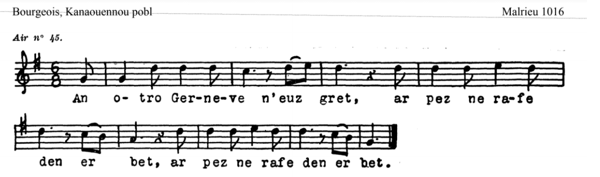
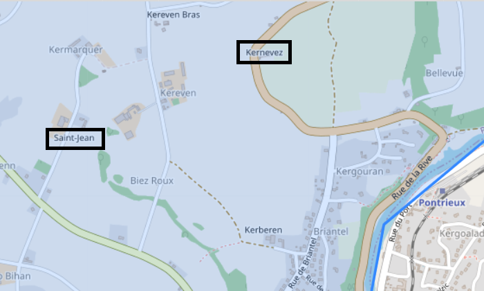
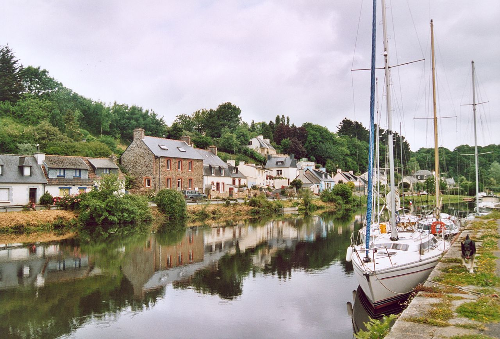

Gwerz Gernevez
La Gwerz de Guernevez
The Gwerz of Guernevez
Chant tiré du 2ème Carnet de collecte de La Villemarqué (pp. 269 - 273).
Mélodie
Arrangement Christian Souchon (c) 2020
|
A propos de la mélodie Elle est donnée par le site consacré à la classification des gwerzioù de Patrick Malrieu: https://tob.kan.bzh/chant-01016.html qui recense ce chant sous le n° M-01016. Elle a été notée, avec un texte assez différent de celui de La Villemarqué, par le colonel Bourgeois à Pontrieux en août 1890 et figure sous le N° 45 dans ses "Kanaouennoù Pobl", p.83, sous le titre "An Otro a Guerneve a Zant Iann Pleuzal ", (Le Seigneur de Kernevé de St-Jean en Ploézal).. A propos du texte Le site "tob.kan.bzh" donne les indications suivantes: Référence : M-01016 Titre critique breton : An Aotrou a Gernevez Titre critique français : Monsieur de la Villeneuve Résumé: Le seigneur de la Villeneuve a fait faire un navire neuf pour loffrir au roi. Le fils aîné demande : « Si vous maimez, avec le navire neuf je nirai point ». « Vous êtes le fils aîné, vous serez le maître. Vos frères seront les matelots ». Le fils de la Villeneuve disait : « Fort est mon cur quil ne se brise en perdant de vue la maison de ma douce Marie Le Poullé ». Ses frères décident de le jeter en mer et acceptent de labandonner sur un récif ou il est sauvé par des matelots après trois jours et trois nuits. « Nous venons de Saint-Jean et allons à la Terre-Neuve ». « Quavez-vous appris à Saint-Jean ? ». « Marie Le Poullé est accouchée dun fils quon dit être au fils de la Villeneuve ». « Avant la nuit, jépouserai Marie Le Poullé ». « Marie, levez-vous pour épouser le seigneur de la Villeneuve même si sa lignée nest pas contente ». « Si votre lignée nest pas contente, je mourrai ici aujourdhui avec notre enfant beau comme le jour ». Thèmes : Épisodes ; Différence de classe sociale, richesse, défauts. Bien que le site mentionne 4 versions et 7 occurrences (non compris la présente version, inconnue jusqu'ici), on connaissait en fait 3 versions: Le site "tob.kan.bzh" signale en outre que dans le chant "Ar bezhiner beuzet e Trebeurden" (Le goémonier noyé de Trébeurden, M-00223), le héros est, lui aussi, abandonné sur un rocher.
|

About the melody | The above tune is given at the site dedicated to Patrick Malrieu's ballad classification: https://tob.kan.bzh/chant-01016.html which lists this song under the number M-01016. It was noted, with lyrics quite different from those recorded by La Villemarqué, by Colonel Bourgeois in Pontrieux in August 1890 who published it under No. 45 in his "Kanaouennoù Pobl", p.83, under the title "An Otro a Guerneve a Zant Iann Pleuzal ", (The Lord Kernevé of St-Jean near Ploëzal) . About the lyrics The site "tob.kan.bzh" gives the following information: Reference: M-01016 Critical Breton title: An Aotrou a Gernevez French critical title: Monsieur de la Villeneuve Summary: The Lord Villeneuve had a new ship made to offer it to the king. His eldest son objects: - "With your leave, I'll never board this new ship". - "As my eldest son, you must be the captain. Your brothers will be the sailors . Villeneuve's son said: - "My heart is not so strong that it should not break when losing sight of my sweet Marie Le Poullé's house". His brothers agree to throw him into the sea. He manages to swim to a reef where he is rescued by sailors after three days and three nights. - "We come from Saint-John village and are on our way to Newfoundland". - "What's the news at Saint-Jean? " - "Marie Le Poullé gave birth to a son, allegedly La Villeneuve's son". - "Before nightfall, I will marry Marie Le Poullé". - "Marie, get up! You shall marry Lord Villeneuve, even if his kith and kin object". - "If your kith and kin object, I will die here today along with our beautiful child." Themes: Episodes; Difference in social class, wealth and status. The site mentions 4 versions and 7 occurrences (not including the present version, unknown until now). There are in fact only 3 clearly different versions: The site "tob.kan.bzh" further reports that in the song "Ar bezhiner beuzet e Trebeurden" (The drowned seaweed of Trebeurden, M-00223), the hero is also abandoned on a rock. |
Gwerz Gernevez, Carnet N°2, pp. 269 - 273
|
p. 269 (Mari Belek) [1] I 1. An Aotrou Gernevez en-deuz graet Ar pezh na refe aotrou ebet:. 2. En-devez graet ul lestr a-nevez Evit reiñ da brezañt d'ar Roue.[2] 3. Lakaet e vreur [3] henañ mestr enni Hag e vreudeur all da verdeîdi. 4. Hag i war ar mor 'n ur redadenn Hag e vreur yaouank da gabiten. II 5. An Aotrou Gernevez lavare, [4] E bord al lestr nevez pa bigne ; 6. - Houarn eo ma c'halon pa ne rann, O kollet gweled Douar Sant-Yann [5] 7. Hag o kuitaat Mari ar Pole, [6] Ur gwaleur vo eno n'em-goude 8. Penaos e c'hallo ma c'halon pad[out] Kaout c'hwezh an ter gand ma dilhad, 9. C'hwezh an ter hag an eoul mesket Lec'h klevet c'hwezh al lore musket. - 10. Hag e vreur henañ a responte D'an Aotrou Gernevez a-neuze : 11. - Ma na serri da c'henou dit, Ni ez taolo er mor da veuziñ! - 12. Na oa ket e ger peurechuet, Oa e devn ar mor tregont gourhed. 13. Ha war ur garreg oa 'n'em gavet An dour anezhan a zo riñset. 14. Tri deiz ha teir noz eñ a zo bet Hep kavout debriñ war ar garreg, Prest da vervel gant 'n naon hag ar se[c'h]ed III 15. Ha p'en-deus echuet an tri deiz N'eus gwelet ul lestr Douar-Nevez. [4] 16. E c'houriz en-devez lakaet D'ober un arouez d'ar vartoloded: 17. - Martolodet ker, din lavarit: N'ho-peus ket ul lestr nevez gwelet? 18. - Geo ! Ni 'n-eus gwelet ul lest nevez Hag a ya da brezant d'ar Roue. 19. Hag a ya da brezant d'ar Roue. Zo dindan an Aotrou Gernevez 20. - Merdeidi kaezh, lavarit din An Aotrou Gernevez oa enni ? « 21. - Ur vandenn a oa dimeus an[ezh]e Holl ez int añvet Ar Gernevez. - 22. An Aotrou Kerneve lavare Na d'ar verdeidi-se a-neuze : 23. - Am c'hasit da Zouar ar Pole Me baeo ho peaj Douar Nevez. - IV 24. Ha war bord ar c'hae pa arrue 'N otrou Kerneve a ziskenne. 25. ' Gwel't ur bagad merc'hed ha gwragez O tont d'eus ti Vari ar Pole. 26. - Petra a reuz a zo erruet, Merc'hed ha gwragez ha pa ouelit? 27. - E ti Mari ar Pole eomp bet. Mirout da ouelañ ni n'hellomp ket. 28. Bet he-deus ur mab kaer 'vel an deiz Laeret zo d'an Aotrou Gernevez. 29. Laeret zo d'an Aotrou Gernevez. Allas, hi n'ema ken e buhez! - 30. An Aotrou Gernevez ha pa glevas D'an douar raktal a fatigas. 31. An Aotrou d'an douar oa kouezhet, Hag ar gwragez o-deus eñ savet. 32. Ha lavare 'n'eil d'eben ane[zh]e : - 'M-eus aon ema 'n'Aotrou Gernevez! - V 33. An Aotrou Gernevez lavare, En ti Pole kozh paz' errue 34. - Na demat d'eoc'h holl, tud an ti mañ, Mari ar Pole, pa ne gwelan? 35. Ema-hi du-se war ar vazh-kañv. Doue da bardono an anaon ! 36. - Aotrou ar Pole, din lavarit: Pelec'h eo ar mab hi e-deus bet ? 37. - 'Karg d'ur vagerez me hen kasan. Ma holl danvez gantañ e sinan! - 38. Sinet 'n-deus gantañ e holl danvez: E vo 'n Aotrou Gernevez goude! VI 39. 'N Aotrou Gernevez a lavare Eus di ar Pole kozh pa zeue: 40. - Na d'eomp bremañ 'vel d'ar glujar, Ni a weleo dindan an douar. - ===== KLT gant Christian Souchon (c) 2020 |
p. 269 (Marie Belec) I 1. Monsieur de Villeneuve avait fait Ce que nul autre ne fit jamais: 2. Armer un bâtiment pour qu'il soit Donné.comme présent à son roi. 3. Pour quartier-maître son frère aîné, Les autres pour marins et gabiers, 4. Pour la course en mer ils sont parés: Leur capitaine c'est son cadet. II 5. Monsieur de Villeneuve disait En montant à bord du fier voilier ; 6. - Un coeur de fer que le mien vraiment, S'il ne rompt, perdant de vue Saint-Jean, 7. Abandonnant Marie Le Poullé, Que de malheur je vais lui causer! 8. Mon pauvre coeur supportera-t-il L'odeur du goudron sur mes habits? 9. L'odeur d'huile et goudron mélangés Et non celles de musc et laurier? - 10. A Monsieur de Villeneuve son Frère aîné, d'un ton grave, répond : 11. - Si tu ne changes pas de chanson, Nous allons t'envoyer par le fond! - 12. Ce discours n'était pas achevé Qu'à trente brasses il a coulé. 13. S'échoue sur un récif par bonheur. Cerné par l'océan en fureur, 14. Trois jours et trois nuits il a passé Sans manger, sur l'aride rocher, De faim, de soif près de décéder. III 15. Au bout de trois jours enfin voilà Qu'il voit passer un Terre-neuvas. 16. Sa ceinture il agite bien haut Pour faire signe à ces matelots: 17. - Avez-vous vu, braves matelots Un bateau neuf voguer sur les flots? 18. - Si fait! Un bâtiment neuf, ma foi, Dont on veut faire présent au Roi. 19. Un bâtiment au Roi destiné: Un Villeneuve le commandait 20. - Braves matelots, un mot encor: Ce Villeneuve était-il à bord? « 21. - De Villeneuve il n'en manquait pas: Tous à bord ils portaient ce nom-là! - 22. Monsieur de Villeneuve disait Aux marins qu'il avait rencontrés: 23. - Conduisez-moi donc chez Le Poullé. Votre pêche je compenserai. - IV 24. Lorsqu'au bord du quai l'on accosta, Villeneuve se précipita, 25. Des femmes et des filles quittaient La maison de Marie Le Poullé . 26. - Quel malheur est-il donc arrivé Mesdames, pour qu'ainsi vous pleuriez? 27. - Chez Marie Le Poullé nous étions Et pas étonnant que nous pleurions! 28. Le fils si beau que la pauvre avait Villeneuve l'a fait enlever. 29. Volé pour ce Villeneuve immonde! Hélas, elle n'est plus de ce monde! - 30. De Villeneuve à ces mots sentait Sous ses pieds le sol se dérober. 31. Et ce seigneur à terre est tombé, Les femmes ont dû le relever. 32. Et l'une à l'autre elles se disaient: - C'est Villeneuve à qui vous parliez! - V 33. Monsieur de Villeneuve disait, En entrant chez le vieux Le Poullé 34. - Bonjour à tous, gens de ce logis: Marie Le Poullé n'est point ici? 35. Si, dans un cercueil, sur des tréteaux. Dieu pardonne aux défunts, s'il le faut! 36. - Maître Le Poullé, dites-moi donc: Mais où donc est son petit garçon? 37. - A sa nourrice je l'ai confié. De tous mes biens il doit hériter! - 38. Il lègue tout à son fils aussi: Le prochain Villeneuve c'est lui ! VI 39. Le sieur de Villeneuve disait, Sortant de chez le vieux Le Poullé: 40. - Nous voilà donc comme la perdrix, N'ayant que la terre pour abri. - ===== Traduction Christian Souchon (c) 2020 |
p. 269 (Mary Belec) I 1. Monsieur de Villeneuve had done What no one else has ever done: 2. Had a new ship built to be given As a present to the King. 3. The quartermaster was his elder brother, The sailors his other brothers, 4. They are ready to travel the seas: Their captain is his younger brother. II 5. Monsieur de Villeneuve said On boarding the new vessel; 6. - A heart of iron I would have, If it did not break, When I lose sight of Saint-Jean's land, 7. Leaving behind Mary Le Poullé, Knowing what misfortune I have caused her! 8. Will my poor heart endure The smell of tar on my clothes? 9. The smell of oil and tar mixed together Instead of musk and bay leaf? - 10. To Monsieur de Villeneuve his Elder brother replied: 11. - If you don't stop complaining, We will throw you into the water! - 12. The others did not let him speak out: He was sinking to a depth of thirty fathoms. 13. Then he found himself on a reef. Surrounded by the raging waves. 14. Three days and three nights he spent Without eating, on the arid rock, Near to dying of hunger and thirst. III 15. At the end of three days at last A Newfoundland ship passed by. 16. His broad belt he waves very high As a signal to these sailors: 17. - Did you see, sailors my friends, A brand new ship on your way? 18. - We did! A new ship, indeed, That they want to offer the King. 19. A ship intended for the King: A Villeneuve was the shipowner. 20. - Brave sailors, one more word: Was this Villeneuve on board? " 21. - A lot of Villeneuves were on board : All those on board bore that name! - 22. Monsieur de Villeneuve said To the sailors he had met: 23. - Take me to Le Poullé's estate. I'll atone For your aborted Newfoundland fishing campaign. - IV 24. When the ship came to dock along the quay, Villeneuve rushed forward, 25. Women and girls were leaving Mary Le Poullé's house. 26. - What misfortune has happened Ladies, making you cry? 27. - At Mary Le Poullé's we were And we cannot help crying! 28. The pretty son that the poor girl had Villeneuve has kidnapped. 29. He was stolen on behalf of this accursed Villeneuve! Alas, she is no longer alive - 30. De Villeneuve when he heard it Fainted and he fell to the ground. 31. He fell to the ground And the women had to help him up. 32. And they said to each other: - It is, to be sure, Villeneuve we were talking to! - V 33. Monsieur de Villeneuve said, Entering Old Le Poullé's house 34. - Good day to everyone in this house: Mary Le Poullé is not here? 35. Yes, she lies downstairs on funeral trestles. God forgive the dead! 36. - Master Le Poullé, tell me: Where is her little boy? 37. - I entrusted him to a nurse. I bequeathed all my goods to him - 38. So did Villeneuve too: The little boy will be the next Lord Villeneuve! VI 39. Monsieur de Villeneuve said, When he left Old Le Poullé: 40. - You and me we are now like partridges: Having nothing but earth to shelter them. - |
NOTES
|
[1] Comme indiqué dans une note annexée au chant Adieu des baleiniers chanté par Marie Le Grouerez de Quemper-Guézennec, 61 ans, le 5 septembre 1879, Marie Bellec, la chanteuse du présent chant, est la mère de cette dernière. Le lieu et la date de collecte des deux chants doivent être très proches: nous sommes toujours en 1879 et au bord de l'aber du Trieux, le pays des baleiniers de Terre-Neuve. [2] Dans toute les versions, le vaisseau neuf armé par les De Villeneuve est destiné à "être offert en présent au roi". S'agit-il d'un bateau mis à disposition du pavillon national dans le cadre d'une "lettre de marque" ou "lettre de course", l'autorisant à attaquer en temps de guerre les navires battant pavillon d'états ennemis? Bref s'agit-il d'un bateau corsaire? Si ce bateau pouvait remonter le Trieux jusqu'à Saint-Jean en Ploëzal - Pontrieu, il ne devait pas avoir une taille excessive. Cependant, la mer pénètre l'aber sur 18 km et des navires de tonnage assez important peuvent encore aujourd'hui s'engager dans la rivière et passer les écluses. Il s'agit de nos jours de sabliers et de bateaux de plaisance La guerre de course a été abolie après la guerre de Crimée par le traité de Paris de 1856. [3] Au lieu de "e vreur" (son frère) il faut sans doute lire "e vab" (son fils). La strophe 4 est certainement erronnée elle-aussi, à en juger par les autres versions. C'est ainsi que dans la version De Penguern, M. de Villeneuve (=An Aotrou Kernevez) est l'armateur. Il désigne son fils aîné comme capitaine et ses autres fils comme membres d'équipage. Il est encore à terre quand son fils aîné demande à être libéré de sa charge, en lui faisant part de ses appréhensions: "Va zadig paour, mar 'n em garit/ Gant al lestr nevez n'em c'hasit ket/ Gant va breudeur all me 'vo lazhet!" "Mon cher père, si vous m'aimez / Ne m'obligez pas à monter à bord du bateau neuf/ Mes autres frères vont me tuer!" Le père reste inflexible. Les instructions qu'il donne à ses autres fils montrent qu'il veut à toute force éloigner leur frère aîné: "E douar Zant Yann a vo karget / En Douar-nevez hen e lezfet!" "En terre de Saint-Jean [en Ploëzal] il sera pris à bord/ Vous le relâcherez à Terre-Neuve". Dans la suite du récit, "Aotrou Kernevez" désigne ce fils aîné qui entre en conflit avec le cadet, dès que le clocher de la chapelle Saint-Jean n'est plus visible depuis le bateau qui descend le Trieux: E vreur kadet a lavare / D'an Aotrou Kernevez hag an deiz-se: / "Dilez[el] rez-te Mari Pole / Pe bremañ-souden koll[ed] da vuhez?" Son frère cadet disait / Au sire de Villeneuve ce jour-là: / "Tu dois choisir entre Marie le Poullé / Ou mourir sur-le-champ!". L'aîné demande comme une faveur: "Va zaolit en tu war ur garreg!" "Jetez-moi à l'eau près d'un récif!" Comme dans la version La Villemarqué, un terre-neuvas qui vient de quitter Saint-Jean recueille le "martolod fortunet" (="matelot infortuné!"). Celui-ci leur demande de faire demi-tour: "Ma renter en douar Zant Yann fete / Me paeo deoc'h ho peaj Douar-Nevez" "Si l'on rentre en terre de Saint-Jean aujourd'hui-même / Je vous paierai le revenu de votre campagne à Terre-Neuve." L'épilogue est différent de celui de la présente gwerz. Le vieux Le Poullé apprend à Villeneuve, que Marie est alitée avec son petit fils "O tamall d'an Aotrou Kernevez", "et qu'elle l'accable de reproches". Et c'est le "happy end": "Debout, Marie! Allons nous marier à Saint-Jean... Que mon enfant soit légitimé..." "barzh ma erruo ma breur kadet" / "Avant que n'arrive mon frère cadet!" [4] Le récit de la version Bourgeois est le même que chez De Penguern, si ce n'est qu'il insiste sur les remords qui accablent l'aîné des Villeneuve, lequel promet en partant: "Mar teuan d'ar ger en buhez / Me he gray Itron a Gernevez / Ganti pemzek mil skoued leve". "Si je rentre vivant / Je ferai d'elle la Dame de Villeneuve / Dotée d'une rente de quinze mille écus"; Ce qui met en rage un de ses frères qui lui enjoint de se taire: "Tav-te gant an dra-se din / Pe m'ez taolo 'r mor da veuziñ!" "Arrête avec ça / Ou je te jette à l'eau pour t'y noyer!" La menace est aussitôt mise à exécution (sans doute par les autres marins) et il se retrouve sur le rocher curieusement appelé "garrec Sauvé" (récif Sauvé) qui existe peut-être dans la toponymie locale. Le capitaine du terre-neuvas qui le recueille lui apprend que Marie Le Poullé a accouché d'un fils dont elle maudit le père. Villeneuve arrive à Saint-Jean le jour même, se précipite auprès de Marie qu'il prie de se lever pour être mariée le jour-même et qu'il fasse d'elle la Dame de Kernévez ("Me ho krei Itron a Gernevez"). [5] Du rapprochement avec les autres versions connues, et en particulier d'une indication fournie par le Colonel Bourgeois, il résulte qu'il s'agit du manoir de Saint-Jean en Ploëzal au fond de l'aber du Trieux, à côté de Pontrieux. La gwerz Le clerc de Kericuff- L'étang du Bizien raconte la mort accidentelle d'un jeune chasseur de cygnes, Toussaint-René-Hyacinthe de Kerguézec, survenue en 1709 dans cette même paroisse de Ploëzal. Il s'agit du chant suivant, également collecté par La Villemarqué. La remarque finale "Gwerz an Aotrou Kericu" signifie peut-être qu'il se demandait si "Kernevez" (Villeneuve) n'était pas une variante de "Kergezeg/ Kerguézec", la famille à qui appartenait le domaine de Kericuff. Le site "infobretagne.com/ploezal.html" indique qu'il existe sur le territoire de Ploëzal un "ancien manoir de la Villeneuve en la dîmerie de Lissinen". Sur la carte ci-dessus nous avons encadré 2 lieux-dits voisins proches des bords du Trieux; Saint-Jean et Kernevez (=La Villeneuve). Peut-être s'agit-il des localités visées dans la complainte. [6] Dans "Annales de Bretagne", 1892-1893, tome 8, pp.85 à 91, A. Le Braz a publié une version de la présente gwerz intitulée "La guerz du Seigneur de La Villeneuve", chantée par Anna Boujeant de Penvénan en août 1890. La jeune femme est appelée Marie Le Poullé dans la traduction française. L'histoire est la même, sauf qu'elle indique le montant du dédommagement accordé aux marins déroutés:"pemp kant skoed" -/ "500 écus" et qu'elle fait tenir à l'aîné des Villeneuve des propos plutôt indélicats: " M'hi gray perc'henn mil skoed leve / Hag hi na 'deus gwenneg ane(zh)e" "Je la rendrai propriétaire d'une rente de mille écus / Elle qui n'a pas un sou vaillant!" La fin est pessimiste: Marie, consciente d'être rejetée par la famille Villeneuve, refuse de se lever et pour aller se marier. Elle préfère mourir le jour même, elle et leur enfant, si beau soit-il : "Me a varvo amañ fete / Gant hor mabig kaer 'vel an deiz!" La version collectée par La Villemarqué confirme que c'est à juste titre que Patrick Malrieu a défini ainsi les thèmes abordés dans le chant M-01016: "Épisodes ; Différence de classe sociale et de richesse". Le 28 novembre 1879, Emile Ernault recevait de La Villemarqué une lettre contenant ce passage : « J'ai retrouvé un regain de jeunesse grâce à une vieille paysanne du pays de tréguier. Elle m'a appris une ballade d'un caractère tout nouveau, chanté une légende très ancienne, mais surtout une chanson de rameur dont les paroles m'ont électrisé ». Il semble certain qu'il s'agit du présent chant et des deux précédents. |
[1] As stated in a note appended to the song Whalers' farewell sung by Marie Le Grouerez at Quemper-Guézennec, 61, on September 5, 1879, Marie Bellec , the singer of the present song, is Marie Le Grouezec's mother. The places and dates of collection of the two songs must be very close: both in 1879 and on the shore of the Trieux firth, the homeland of Newfoundland whalers. [2] In all versions, the new vessel owned by De Villeneuve is intended to "be offered as a present to the King". Is this a ship made available to the national flag under a "letter of marque" or "commission", authorizing it to attack, in time of war, ships sailing under the flag of enemy states? In short, is it a privateer vessel? If this barque could sail up the Trieux firth to Saint-Jean near Ploëzal - Pontrieu, it should not be too large. However, the sea penetrates the firth up to 18 km and ships of fairly large tonnage can still today enter the river and pass the locks. Nowadays the traffic mostly consists of sand carriers and pleasure boats Privateer warfare was abolished after the Crimean War by the Treaty of Paris of 1856. [3] Instead of "e vreur" (his brother) we should probably read "e vab" (his son). Stanza 4 is also certainly incorrect, judging by the other versions. Thus in the De Penguern version, M. de Villeneuve (= An Aotrou Kernevez) is the shipowner. He appoints his eldest son as captain and his other sons as crew members. He is still ashore when his eldest son requests him to be released from his charge, telling him of his apprehensions: "Va zadig paour, mar 'n em garit / Gant al lestr nevez n'em c'hasit ket / Gant va breudeur all me' vo lazhet!" "My dear father, if you love me / Don't make me board the new boat / My other brothers will kill me!" The father remains inflexible. The instructions he gives to his other sons clearly show that he above all wants them to drive away their eldest brother: "E douar Zant Yann a vo karget / En Douar-nevez hen e lezfet!" "At Saint-Jean [near Ploëzal] let him be taken on board / You will release him in Newfoundland". In the rest of the story, "Aotrou Kernevez" refers to this eldest son who comes into conflict with the others, as soon as the steeple of Saint-Jean's chapel is no longer visible from the boat sailing down the Trieux river: E vreur kadet a lavare / D'an Aotrou Kernevez hag an deiz-se: / "Dilez[el] rez-te Mari Pole / Pe bremañ-souden koll[ed] da vuhez?" His younger brother said / To the Lord Villeneuve that day: / "You must choose between Mary le Poullé / Or immediate death!". The elder asks as a favour: "Va zaolit en tu war ur garreg!" "Throw me into the water near a reef!" As in the La Villemarqué version, a Newfoundland whaler ship who has just left Saint-Jean collects the "martolod fortunet" (="infortunate sailor!"). The latter asks them to turn around: "Ma renter en douar Zant Yann fete / Me paeo deoc'h ho peaj Douar-Nevez" "If we get back to Saint John's land today / I'll pay you the income from your whaling campaign in Newfoundland." The epilogue is different from that of the present gwerz. Old Le Poullé tells Villeneuve that Mary is bedridden with his grandson, "O tamall d'an Aotrou Kernevez", "and that she overwhelms him with reproaches". And now comes a "happy ending": "Get up, Mary! Let's get married at Saint-Jean / My child be legitimized..." "barzh ma erruo ma breur kadet" / "Before my younger brother interferes!" [4] The story in Alfred Bourgeois' version is the same as in De Penguern's version, except that it insists on the remorse which overwhelms the eldest Villeneuve, who promises on leaving: < br> "Mar teuan d'ar ger en buhez / Me he gray Itron a Gernevez / Ganti pemzek mil skoued leve". "If I come back alive / I will make her the Lady Villeneuve / Endowed with a pension of fifteen thousand crowns"; What infuriates one of his brothers who orders him to keep quiet: "Tav-te gant an dra-se din / Pe m'ez taolo er mor da veuziñ!" "Stop it / Or I'll throw you into the water to drown!" The threat is immediately carried out (probably by the other brothers) and he finds himself on the rock weirdly called "garrec Sauvé" (Safety Reef) which perhaps exists in the local toponymy. The captain of the Newfoundland ship who rescues him tells him that Mary Le Poullé has given birth to a son whose father she curses. Villeneuve arrives at Saint-Jean the same day, rushes to Mary whom he begs to get up and marry him the same day, so that he may make her the new Lady Kernévez ("Me ho krei Itron a Gernevez ") . [5] From the comparison with other known versions, and in particular from an indication provided by Colonel Bourgeois, it appears that the place referred to is Saint-Jean Manor near Ploëzal at the bottom of the Trieux firth, near Pontrieux town. The gwerz The Clerk of Kericuff - The Bizien pond tells us of the accidental death of a young swan-hunter, Toussaint-René-Hyacinthe de Kerguézec, which occurred in 1709 in this same parish Ploëzal. This is the following song, also collected by La Villemarqué. The remark concluding the present song "Gwerz an Aotrou Kericu" perhaps means that La Villemarqué wondered if "Kernevez" (Villeneuve) was not a variant of "Kergezeg / Kerguézec", the family to which belonged Kericuff Estate. As stated on the site "infobretagne.com/ploezal.html", there exists in the Ploëzal area an "old Villeneuve manor in the Lissinen fiscal district". On the map above we have highlighted 2 neighbouring localities near the banks of the Trieux river; Saint-Jean and Kernevez (= New Town = La Villeneuve). Perhaps these are the places addressed in the complaint. [6] In "Annales de Bretagne", 1892-1893, book 8, pp. 85 to 91, A. Le Braz published a version of this gwerz entitled "La guerz du Seigneur de La Villeneuve", sung by Anna Boujeant at Penvénan in August 1890. The young woman is called Marie Le Poullé in the French translation. The story is the same, except that it specifies the amount of compensation awarded to the diverted sailors: "pemp kant skoed" - / "500 crowns" and the eldest of Villeneuve sons is reported to have made a rather indelicate remarks: "M'hi gray perc'henn mil skoed leve / Hag hi na 'deus gwenneg ane(zh)e" "I will make her the owner of an annuity of a thousand crowns / Knowing that she does not have a penny to her name!" The end is pessimistic: Mary, who is aware of being rejected by the Villeneuve family, refuses to get up and to get married. She prefers to die the same day, with their child, however fair it may be: " Me a varvo amañ fete / Gant hor mabig kaer 'vel an deiz!" The version collected by La Villemarqué confirms that Patrick Malrieu rightly defined the themes addressed in song M-01016: "Episodes; Differences in social class and wealth." On November 28, 1879, Emile Ernault received a letter from La Villemarqué containing this passage: "I have found renewed youth thanks to an old peasant woman from the country of Tréguier. She taught me a ballad of a new character, sang a very old legend, but above all a rowing song whose lyrics electrified me. It seems certain that this applies to the present song and the two preceding ones. |

Port de Pontrieux